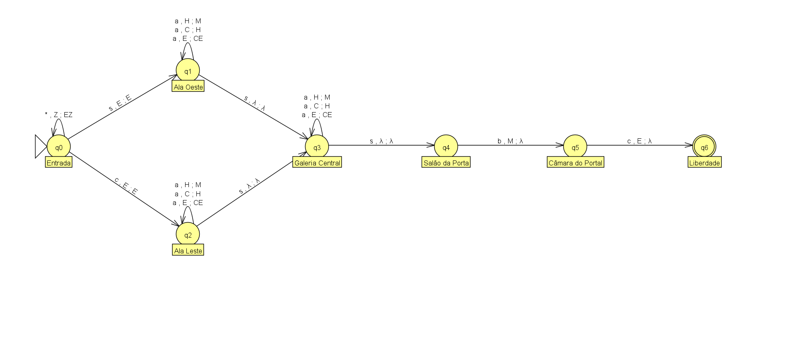

Ande com WASD. Andar não gera símbolo: só encostar num objeto gera.
Roteiro gerado:
Um jogo cuja lógica é um autômato de pilha
Ande com WASD. Andar não gera símbolo: só encostar num objeto gera.
Roteiro gerado:
A chave mestra da masmorra foi quebrada em pedaços e espalhada pelas salas. O aventureiro pega a estrela-selo na Entrada, sem ela nenhuma saída se abre, e escolhe o caminho: o corredor que leva à Ala Oeste ou o portal azul que leva à Ala Leste. As duas alas desembocam na Galeria Central.
Pelo caminho ele junta exatamente 3 pedaços, que se encaixam na mochila até formar a chave mestra, abre a porta do Salão e foge pelo portal final. A chave tem só 3 encaixes: há 6 pedaços ao alcance em qualquer caminho (3 na ala e 3 na Galeria), e um 4º pedaço quebra a chave. As grades se fecham atrás do aventureiro; não há volta.
Explorar: ande com W A S D (ou as setas). Andar não gera símbolo. O símbolo nasce quando o aventureiro encosta num objeto, e o autômato o processa na hora. Sem transição possível, a execução é rejeitada; ao cruzar o portal final, é aceita.
Roteiro: digite a sequência de símbolos (ex.: *saasasbc) e acompanhe o processamento passo a passo, com o mesmo painel. No JFLAP não existe WASD: lá se testam essas mesmas palavras, com o mesmo resultado.
A tecla S só move o aventureiro para baixo. O símbolo s é gerado ao atravessar uma passagem. Enquanto o campo do roteiro está em foco, o teclado não move o aventureiro.
| Símbolo | Ação no mapa | Efeito |
|---|
M = (Q, Σ, Γ, δ, q0, Z, F)
Critério de aceitação: por estado final. O roteiro é aceito se, ao consumir toda a entrada, o autômato estiver em q6. A pilha termina com Z, mas isso não é exigido. O autômato é determinístico: em cada estado, para cada par (símbolo, topo), existe no máximo uma transição.
| Símbolo | Significado |
|---|
Notação do JFLAP: entrada, desempilha ; empilha, com λ para vazio. Passe o mouse numa regra para destacá-la no diagrama. A regra usada no passo atual fica acesa.
| Nº | De | Para | Rótulo JFLAP | δ | Significado |
|---|
Redesenhado a partir do arquivo masmorra-chave-partida.jff, com o estado atual aceso. Abaixo, a imagem exportada do JFLAP.

Cada linha é uma configuração do autômato. Pilha com o topo à esquerda, como no JFLAP.
| Passo | Estado | Sala | Lido | Pilha | Regra |
|---|